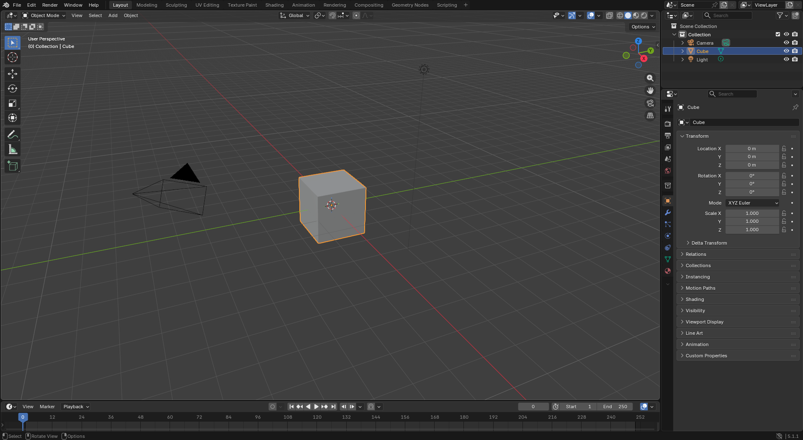
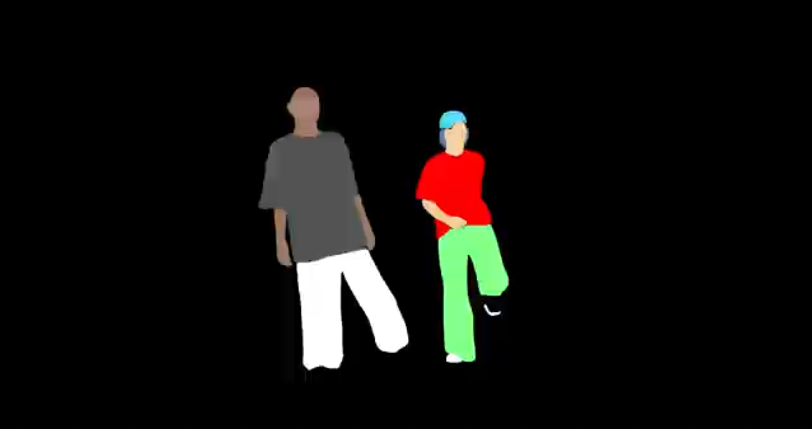

Multimedia & Authoring
A showcase of technical workflows in 3D visualization and frame-by-frame rotoscoping. Documented and authored by Ullyzes Zabdiel Olorga.
A cinematic project focused on 3D motion, scene presentation, and an integrated interactive planetary calculator.

A 60-second stylized study of traced movement, isolation techniques, and complete weekly documentation.

Discover the inspiration, objectives, development process, software used, and technologies behind this multimedia portfolio. Learn how Blender, HTML, Tailwind CSS, and JavaScript were combined to create an interactive educational experience.
Objectives • Tools • Workflow